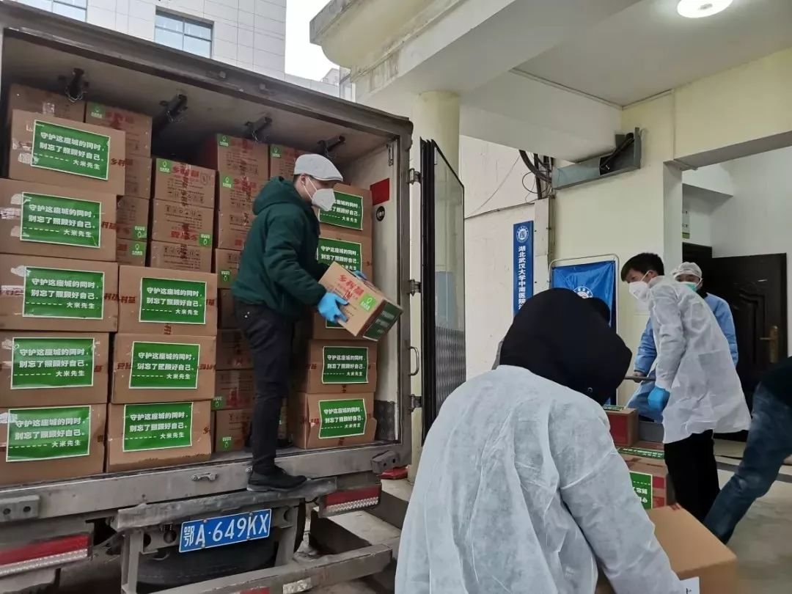
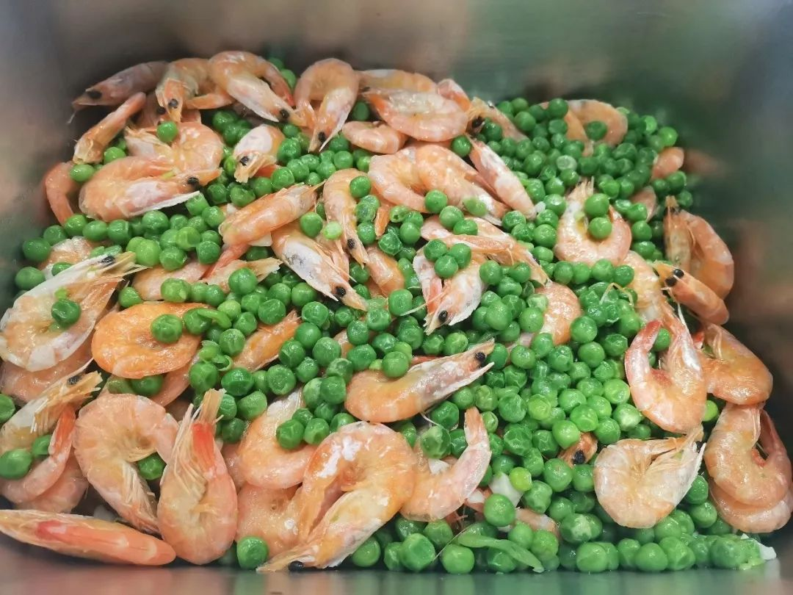

武汉封城后，我每天坐志愿者的车上下班
原文链接 备份链接 “ - 疫 情 之 下 - 武汉的疫情就像一簇紧簇的乌云，笼罩在每一个人的心头。但所幸，在这个受伤的城市中，在每台志愿者车里，在疲于奔波的路上，总有那么一群可爱的人，温暖着我们前线医护工作者的心。 ” 1 2020年 …
除了菜品的装卸、运送外，我还要负责为各个医院不同的人群制定不同的菜谱。比如，护士群体需要增加抗疲劳的食材，专家组的菜品可略微清淡，而建筑工人的菜单，则需要大油大荤。
口述 | 石在余
整理 | 刘朝晖
昨晚到今天，我和我的兄弟们干了一个通宵，因为要紧急制作1800份早餐。现在我还是不能睡，新的一天，我们还有沉甸甸的任务，武汉还有很多医院和志愿者在等着我们配送午餐和晚餐。从封城到现在，我们每天做的事情，就是让那些在抗疫一线的人们，能吃上热腾腾的免费新鲜饭菜。
我叫石在余，是一家自选中餐连锁品牌“大米先生”在武汉的区域行政总厨。在武汉我们有160多家门店，疫情一来基本都关闭了，现在只有十几家经允许特别营业。就靠着这十几家店，我们每天要为武汉的医院和隔离点等，提供上万份饭菜。

石在余在为医护人员送盒饭
一万份米饭送到晚上八点
大年三十，网上流传着武汉的医护人员吃饭有困难的消息，我们在重庆的总部得知后，立即从库房中调出4000份自热米饭，又召回部分已放假的工人，大年初一赶制出6000份自热米饭，凑成10000份运往武汉。由于交通管制，运送过程并不顺利。我们的同事通过发朋友圈求助，最终在热心市民的帮助下，才找到了相关部门办好了手续。
通过湖北慈善总会等部门协调、帮助，大年初三，我和五名同事一起，又是卸货又是装车的，把4000多份自热盒饭送到了武汉大学中南医院。其余的送到武昌区卫健委，由卫健委统一分配给武昌区各大医院。弄了整整一天，一直忙到晚上八点，大家伙都累得不行，但是心里还是很欣慰的。接收的人员对我们表示感谢，我说应该感谢的是公司，我们只是代表企业在前线做事。

自热米饭运抵中南医院
我也知道，这10000份米饭对于武汉各大医院来说，只是杯水车薪。要想给在前线奋战的医护人员提供帮助，我们必须尽自己所能，用自己的资源，给他们更多的支持。正好烹饪协会发了招志愿者的通知，我又是协会会员，第一个就报了名。然后我就在微信的公司群里进行了倡议，很多人都是我的徒弟，大家报名都非常踊跃。到后来，报名的人太多，居然都要托关系走后门了。
为“火神山”工地送餐
由于很多餐饮企业都关门了，武汉的医院、隔离点的酒店等，对于餐饮的需求真的是很大。我们主动与烹饪协会、各大医院、商务局等进行对接，了解他们的需求，我的微信里最近已经新建了有将近30个群，都是进行需求对接和协调的。还有一些志愿者车队，运送患者和医护人员，还有物资，也是在为抗击疫情做出贡献，我们也会为他们提供免费盒饭。
这些群每天都很热闹，各个用餐单位会不断发来当日的订餐数量，然后我要再协调落实，派单给十几家店，几乎没有空闲。随着各地援助的医疗队不断前来，这些数量也在不断增加。有个医院的微信群里面，有个医生发了一句：我终于吃到米饭了，我们都十几天没有吃到米饭了。当时我们看到那个信息，既为医护人员能吃上我们送的免费餐食高兴，鼻子也有点酸。
火神山医院开工建设后，听说担任建设任务的中建三局伙食供应不上，我们主动联系了中建三局。对方开始说要付费，我说你们是在为抗击疫情做贡献，我们能为你们提供免费的盒饭，机会难得，弄得对方也挺不好意思的。于是我们每天往工地上送午餐和晚餐，有700多份，到火神山医院完工，六天时间里一共送了4000多份免费盒饭。

火神山工地的工人们吃上了热盒饭
两荤一素的盒饭送到火神山工地上，工人们对菜品的味道还是满意，但是不少人反映说饭量少了。我反应过来，建筑工人体力消耗巨大，一般标准饭量的盒饭无法满足他们的胃口，所以接下来我们不仅加大了饭量，还在菜里增加油荤，让工人师傅们能吃饱吃好。
1800份早餐需求突如其来
现在，我们每天要提供一万份左右的免费盒饭，包括午餐和晚餐，其中有将近一半是送往各大医院。长航医院、协和医院、肺科医院、第四医院……有七八家医院都是我们在负责送餐。这段时间以来，医护人员对我们免费送餐的行动都表示了感谢，能够被他们认可，我们的心里也热腾腾暖洋洋的。

医护人员表达谢意的微信
2月18日晚上，我的微信群里突然发来信息，同济医院中法新区院区需要1800份早餐。对接的主任说，他们的医生护士早餐一直在吃牛奶加面包之类，想吃点热乎的早餐。当时已经接近夜里10点40，这一下搞得我有点手忙脚乱。之前我们每天送的早餐总共也就一千多份，而同济医院这次一家就是好几个医院的量。
我立即召集各家店的店长，在群里开会进行紧急部署，询问哪家店能接单。这个突然之间下的单这么大，又比较急，配单的群里，店长们看到都有点害怕。我的想法是，这个单我们必须要拿下来，一定要满足医生护士们的这个愿望。
经过连夜忙碌调配，我们终于将这1800份早餐的原料都落实了，然后就是紧急的制作，然后9个人再去一家家店里用最快的速度将做好的早餐打包装进保温箱，此外还要协调车辆，联系医院办出城的通行证。我们要赶在7点前将早餐送到医生护士们的手上，因为7点后他们上班了，就没办法吃早餐了。2月19日早上6点，我们出发赶往40公里外的蔡甸中法新城同济医院，终于在6点40分将早餐送到了医院。
为了这1800份早餐，我和一帮同事整整忙了一个通宵。这份早餐有两个鸡蛋、一杯豆浆，一个烧麦、两个蒸饺和一个馒头，希望这些富含蛋白质的营养，能够帮助医生护士和专家们提供自己的免疫抵抗力。
元宵节的汤圆让护士掉泪
除了菜品的装卸、运送外，我还要负责为各个医院不同的人群制定不同的菜谱。比如，护士群体需要增加抗疲劳的食材，专家组的菜品可略微清淡，而建筑工人的菜单，则需要大油大荤。虽然我们的原料采购目前基本还能满足需求，但是非常时期，也不是那么丰富，所以我就要想办法在菜品上翻翻花样。

比如说最近原料里鸭子比较多，我们就从口味上来改变了。今天是红烧鸭子，明天就做大王烧鸭，后天就做卤鸭腿。做法上不一样。吃的人也会有不一样的感受，不会倒胃口。我们的菜单拉出来一个星期都不会重复。这个时期，大家心情都不太好，我们希望尽量从饮食上也让大家心情愉悦起来，食欲好一点，增加对病毒的抵抗力。

厨师在紧张备餐
有的医院还会有清真餐食和素食的需求数量发过来，我们也能满足他们的需求。定制的清真餐，菜品以牛羊肉和鱼类为主，进行单独包装。素食则是蔬菜、土豆、胡萝卜什么的。
元宵节那天，我们还特地在盒饭外加送了7000份汤圆，里面还有枸杞和蛋花。送餐的时候，我看到有好几个护士在看到居然有汤圆的时候，眼里都含着泪花。元宵佳节，这些医护人员都不能与家人团聚，我们送上这份汤圆，也是想尽我们所能，给他们更暖心的关怀。

中新网的报道视频
儿子说我是英雄
我们在武汉现在有一百多个员工在坚持工作。很多人每天早上4点多就要起来，5点钟到岗，洗菜淘米，加工烹饪、包装盒饭……我也要经常到各店巡视，有时候会亲自下厨帮他们炒菜，送盒饭。每天都是要忙到晚上八点以后，我才能拖着疲惫的身体回宿舍休息，弟兄们也一样辛苦。由于公交都停了，私家车也不让开，有个同事上下班都要骑一个半小时的共享单车。小区的封闭管理，也给我们工作带来了一些不便。前几天有一家店里八个人，有五个被封小区出不来，只靠三个人完成了当天任务。好在这两天经过和社区的协调沟通，我们的员工基本都能顺利到岗了。
虽然很累，但是我们的热情都很高涨，精神都很饱满。在群里，大家都会互相点赞，团队意识都很强。大家都意识到，我们是在做一件非常有意义的事情，是在为社会做贡献。我们做餐饮的不像一线的医护人员，我们苦点累点，但是比起他们的危险和辛苦，就不算什么了。不过等疫情过去，还是要对这些辛苦付出的员工进行表彰的。

石在余在装运盒饭
本来春节我是要准备回家的，家里一堆事。山东老家的父亲病重住院，8岁的儿子也在重庆的家里等我回去。被关在武汉，说不心急是假的，没能回去陪伴家人也挺遗憾的，觉得挺对不住他们的。不过想想，既然留在了这里，就踏踏实实地做些事吧。
家里人都对我表示了理解和支持。每天，我都会和父亲和家里人进行视频通话，他们也很关切我的身体，叮嘱我注意安全。父亲和我说，要是他还年轻，也一样会做出和我一样的选择。
前不久，长江日报采访了我，也对我们团队的事情进行了报道。我把这件事告诉了家里，儿子在视频中对我竖起了大拇指，还说：“爸爸成大英雄了！”我的心里面就有那种欣慰和自豪的感觉。儿子的话鼓舞了我，我一定要为他做个榜样出来。
其实我不算什么英雄，那些战斗在抗疫一线的人才是英雄。有这些英雄在，武汉一定会渡过难关。

征集令
《新民周刊》现面向全国征集新冠肺炎采访对象和真实故事：
如果你是参与抗击新冠肺炎疫情的医护人员或其家属，我们希望聆听你的“战疫”故事，也希望传达你的诉求。
如果你是确诊、疑似患者本人或家属，我们希望了解你和家人如何“抗疫”的过程，让外界了解你的真实经历。
如果你是疫情严重地区的普通市民，我们希望展现你的乐观，并倾听你所需的帮助。
如果你是公共服务人员或各类捐助者，我们希望看到你的“最美逆行”，记录下你的无私。
……
抗击新冠肺炎疫情，我们诚征对疫情了解的社会各界人士，提供相关线索，说出你的故事，让我们用新闻留存这一切。
《新民周刊》新冠肺炎线索征集值班编辑联系方式（添加时请简要自我介绍）：
周一：应 琛 微信号：paulineying0127
周二：金 姬 微信号：gepetta
周三：黄 祺 微信号：shewen-2020
周四：周 洁 微信号：asyouasyou
周五：孔冰欣 微信号：kbx875055141
周六：吴 雪 微信号：shyshine1105
周日：姜浩峰 微信号：jianggeladandong
✳如你需要捐赠物资，可与以下两位工作人员联系:王勇：WangYong-SH 吴轶君：rommy150708（添加时请注明“捐物资”，方便工作人员快速通过您的申请，谢谢。）
新闻是历史的底稿，你们是历史的见证者。期待你的故事、你的线索！

▼
大家还都在看这些
▼
新民周刊所有平台稿件， 未经正式授权
一律不得转载、出版、改编
或进行与新民周刊版权相关的其他行为，违者必究


原文链接 备份链接 “ - 疫 情 之 下 - 武汉的疫情就像一簇紧簇的乌云，笼罩在每一个人的心头。但所幸，在这个受伤的城市中，在每台志愿者车里，在疲于奔波的路上，总有那么一群可爱的人，温暖着我们前线医护工作者的心。 ” 1 2020年 …
原文链接 备份链接 ▲ 武汉骑手老计说：明天太阳会照常升起。（受访者供图） 经此一役，杨静、华浩、李大双、曹新志、胡启等人都明白了一个道理：这是一场“团战”，那些拯救人们于危难中的英雄，也需要被守护。在他们背后的支撑，是城市新基础设施在 …
原文链接 备份链接 跳广场舞、练瑜伽、打太极、复习备考……每天我们都能从社交媒体上了解到武汉“方舱医院”内患者们的日常生活。这些看似平常的活动，却为紧张的抗疫工作带来了一丝活力与鼓舞。 2月3日晚，武汉市宣布将在武汉国际会展中心、洪山体育 …
原文链接 备份链接 文/六筒 李岩半年前刚去过武汉，和家人去旅游，主要想看看黄鹤楼。那还是夏天，热气蒸得人头上冒烟。高温挡不住蜂拥的游客，摩肩接踵，拥塞的车辆在大道上艰难挪动。“真是个大都市”，她想。 李岩是河北医科大学第二医院呼吸与危重 …
原文链接 备份链接 一座人口过千万的超级大都市在突降灾疫后陷入休克，然后艰难走出混乱无望 财经封面。创意设计/黎立 文 |《财经》特派武汉记者 刘以秦 信娜 王小《财经》记者 房宫一柳 黎诗韵 俞琴 王丽娜 王静仪 陈亮 李斯洋 李皙寅 …